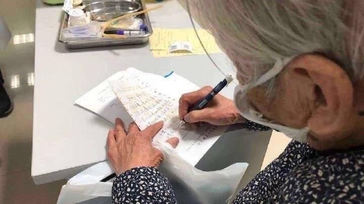

意大利累计确诊1694例，韩国病亡22人“新天地”教主被起诉
原文链接 备份链接 图片来源：半岛电视台 “ 全球新冠肺炎疫情播报，持续更新。 ” （本文持续更新中。文中段首所示时间为本文更新时间。） 意大利 0800【确诊病例升至1694例，总理签署新疫情防控法令】 截至当地时间1日22点，意大利累 …
.

对不起，我撒了个谎
![]() 小儿内分泌林医生 03-10 00:04 已编辑 投诉 编辑记录
小儿内分泌林医生 03-10 00:04 已编辑 投诉 编辑记录
阅读数：57万+
.
我在大年初十的凌晨2点遇到了90岁的徐美武老奶奶，她为了不让其他家庭成员被感染，主动承担起照顾当时就被确诊为新冠肺炎的64岁儿子的重担，陪伴了4天4夜之后，儿子住进病房了，她才能独自一人来门诊找我做检查。
给她开检查单的时候我才发现这位老奶奶已经是90岁高龄了，作为一名医生，我很难想象这位老人家在医院怎么熬过的这4天时间，而老奶奶很淡然的告诉我，她这个年龄已经无所畏惧了，只要儿子的病情能康复，她这点苦又算什么呢？
在等待结果出来的时候，她找我们的护士借了纸和笔，写下了感动无数网友的一段留言：“儿子，要挺住，要坚强，战胜病魔。要配合医生治疗，呼吸器不舒服，要忍一忍，以便恢复。如果血压正常，鼻孔吸氧，请求医生。忘记给现金，托医生带上伍佰元，可托人买日常用品。” 真情流露于笔尖，结字端庄，让人不禁潸然泪下。生命有时很脆弱，有时却很坚强，女子本弱，为母则刚，从这位白发苍苍的九旬老人身上，我们看到母爱迸发出的巨大能量。


徐奶奶的事情在网络传开了以后，无数网友为之感动，1月底正是疫情爆发达到高峰的时期，她坚强的母爱给了无数人坚强活下去的希望。
而我，对大家隐瞒了一个事情，她的儿子其实早在2月4日（正月十一），也就是徐奶奶找我检查的第二天下午5点40就在我们ICU抢救无效去世了。

当时我就跟我的同事们，包括徐奶奶儿子的管床医生交代，千万不要告诉徐奶奶这个残酷的事实，老人家会受不了的。
当时也有很多媒体想跟进这件事情，但都被我一一婉拒了，目的有2个：
1.我们已经联系了徐奶奶居住地的社区，那边的干部已经妥善接管了，我不想让老人家受到过多的打扰。
2.我也不想让媒体把这个残酷的事实告诉大家，因为那个时候疫情形势严峻，大家都人心惶惶，几千万人被奶奶的温情所打动，我又如何忍心让大家绝望？
而之前了解的情况是徐奶奶因为高龄，低烧，一直在医院疗养，今天，我再次询问她的情况，才发现他们家已经把这个沉痛的消息告诉了她，老人备受打击。

之所以选择在今天把这个消息告诉大家，主要是因为已经连续2天，新增确诊病例在100以内了，大家可以稍稍松一口气，也许能接受这个残酷的事实；然后老人家也得知了这个消息，尽管难过，但生活还要继续。
也许是电视剧太过美好，在现实生活中，哪里有那么多的happy ending，我们在这次疫情中已经失去了太多太多。但逝者已去，我们只有擦干眼泪，携手前行。在这里也要向无数关心徐奶奶和她儿子的网友们说一声抱歉。
There’s always gonna be another mountain
I’m always gonna wanna make it move
Always gonna be an uphill battle
Sometimes I’m gonna have to lose
Ain’t about how fast I get there
Ain’t about what’s waiting on the other side
It’s the climb.
.
9次打赏


“时代的一粒灰，落到个人头上，就是一座山。” 庚子年春月，疫情肆虐。 感染过万，死者数千。无数家破人亡，都在当下发生。 一个女孩的母亲感染，仓促离世。没几天，父亲感染，也走了。而她自己也被确诊。 @在人间的报道里，倩倩的母亲走了，父亲确诊，她与哥哥双双感染，侄子也有发热迹象。 一个名叫常凯的导演，父亲、母亲、姐姐、他自己，在不到17天时间内，全部惨烈离开。 他妻子，也已确诊住院。 肺炎患者求助超话中，你会看见，一个接一个人沉默离世。 像风消失在风中。一点声音都没有。 而他们走后，悲剧尚未结束。 他们的家人也跟着感染，甚至，不断跟随而去。 这种惨烈的场景，往往令医生都崩溃痛哭。
.

没病没灾，就是最大的福气。平静安稳，就是最好的人间。武汉疫情至今，死亡数字越来越高。小语最近看了两个逝者的故事，心里很不平静。他们从更细微却更震撼的视角，刷新了我们对这场灾难的认知。 01.常凯，55岁，湖北电影制片厂导演，2月14日凌晨因感染新冠肺炎去世。当天傍晚，他的姐姐也去世了。12天前，他母亲去世。17天前，父亲去世。都是同一原因。17天里，一家四口撒手人寰，简直是灭门之灾。原以为这样的惨烈情节只会出现在电视剧里，哪知道现实里，正在发生。 这本是一个幸福的书香门第。好友说，常凯毕业于武汉大学，高大帅气，为人随和，很绅士，有品位。他的父母都是同济医院的教授，儿子在英国读书。
.

@武汉加油 迄2月18日发文前止，武汉确诊42752例，死亡1381例。 他们不是数字。 他们是人。 她坐在那里，眼神麻木。看不出悲喜。 “我先生两天前去世了，因为这个病。”声音也没有起伏。僵的，木的，空洞的……像一个心死的人，说的认命的话。 她60多岁，是一位新冠肺炎的确诊患者。 和一般见证亲人离去的人不同，她不呼天抢地，也没有满面悲戚。 她拿着一堆片子，抽出几张，轻轻地说：“这是我先生的，我要保管好，到时去殡仪馆领骨灰时要用……” 声音还是没有任何起伏。 可细细听来，那平静里，不是宁和，全是绝望——知道了无希望，不敢奢望，不再挣扎。
.
-1- 这两天，终于陆续有确切的官方消息，证实那个叫柳帆的女护士，因感染新冠肺炎，离世了。 之前，有医护人员和网友哀悼她时，因把名字错写成了“柳凡”，而被认定为谣言。 这也让“不忍再看到医护人员牺牲”的网友，松了一口气： 但愿是个误会，但愿她还活着。 但，副主任护师柳帆，并没有幸运地逃脱。 59岁的她真的走了。 网传柳帆生前照片 她原本55岁时该从武昌医院退休。因为一线医护一直紧张，她就继续在武昌医院梨园社区卫生服务中心注射室上班。 新冠肺炎爆发后，她一直坚守在一线。 2月6日，她出现低烧症状。 2月7日，被确诊为新冠肺炎。 2月14日下午18时30分，经抢救无效，离世。
.

专家简介：付强，上海交通大学附属第一人民医院脊柱外科主任医师、脊柱外科主任及微创中心主任，博士生导师，副教授，医学博士，上海市科技启明星。擅长：各种复杂脊柱疾病的国际先进治疗技术，包括青少年脊柱侧凸微创矫形、强直性脊柱炎截骨、脊柱肿瘤切除、脊髓损伤神经功能的修复重建、重度腰椎滑脱症固定融合、重度腰椎管狭窄症减压、颈椎后纵韧带骨化症、胸椎黄韧带骨化症360°减压术、脊柱翻修等高风险复杂手术；腰椎间盘突出症介入、射频、MED镜、经皮内镜、经皮固定融合等微创阶梯治疗；腰椎滑脱、椎管狭窄的内窥镜治疗和微创治疗、复杂颈椎病的微创和常规手术、骨质疏松症外科微创成形术，脊柱结核、脊柱感染性疾病的微创治疗；颈
.
.
快速开通微博你可以查看更多内容，还可以评论、转发微博。
.
.
原文链接 备份链接 图片来源：半岛电视台 “ 全球新冠肺炎疫情播报，持续更新。 ” （本文持续更新中。文中段首所示时间为本文更新时间。） 意大利 0800【确诊病例升至1694例，总理签署新疫情防控法令】 截至当地时间1日22点，意大利累 …
原文链接 备份链接 澎湃新闻记者 陈绪厚 不幸的消息再次传来。武汉市中心医院3月1日上午发布公告：武汉市中心医院甲状腺乳腺外科党支部书记、主任、主任医师、中国医师奖获得者江学庆同志， 在抗击新冠肺炎疫情工作中不幸染病，经全力抢救无效，于3 …
原文链接 备份链接 疫情发展 1.韩国确诊激增至 833 例，多数为群聚感染。2 月 24 日下午 4 点，据「韩国中央防疫对策本部」发布，韩国确诊激增至 833 例，累积 7 人死亡， 24 日当天确诊了 231 例。其中，至少 458 …
原文链接 备份链接 图片来源：pexels 文：央视新闻 孙牧宁 近日，新加坡卫生部门通报称，一名57岁的女性同时确诊感染登革热和新冠病毒肺炎，这是新加坡首例类似病例。 卫生部称，这名57岁的病患最初送医后被确诊感染登革热。在住院后，该名 …
原文链接 备份链接 【财新网】（记者 赵宁）北京大学人民医院（下称北大人民医院）有住院病人确诊为新冠肺炎的消息获得证实。与该医院相关确诊病例一共三人，分别为田某某、李某某、张某某，其中一人先由发热门诊排查，后又追溯发现了涉及医院老年科和肾 …